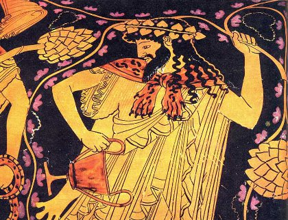
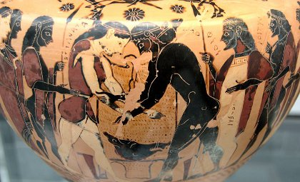

Kıbrıs adasının Amathontus bölgesinde Pyglamion isimli mesleğine hastalık derecesinde aşık bir heykeltıraş yaşıyordu. Pygmalion yaptığı heykellere öylesine büyük bir aşkla bağlı idi ki, zamanının büyük kısmını bu heykeller arasında geçirirdi. Aslında Pygmalion, heykelleri ile ilişki kurmasının gerçek nedeni insanlardan kaçmasıydı. Bunun sebebi ise aşk ve güzellik tanrıçası Afrodit’ye inanmayıp, onun tanrısal gücünü inkardan gelen Amothonte’nin genç kızları Propatides’lerdi.
Afrodit kendisini inkar eden bu genç kızlara ceza olarak bütün kalplerini şehvet duyguları ile doldurup taşırmış, onların utanma duygusunu yok ederek önüne gelenle yatan onursuz fahişelere dönüştürmüştü. En nihayetinde Propatides’ler, kaya haline dönüşerek bu onursuz durum sona erdi. Pyglamion, bu Propatides’leri gördükçe tüm kadınlardan ve gider insanlardan iğrenerek kendisini heykellerinin arasına kapatmıştı. Propatides’ler onunla bununla çiftleştikleri için kolayca veba hastalığına maruz kalırlardı. Bu yüzden Pyglamion onların geçtiği yerlerden bile geçmemeye özen gösterirdi.
Bu genç kızlar yüzünden Pyglamion, aşk duygusunda o kadar uzaklaşmıştı ki, Afrodit’ye de tapınmazdı. Fakat günlerden bir gün Pyglamion, fildişinden bir kadın heykeli vücuda getirdi. Bu kadın heykeli o kadar güzel ve cezp edici idi ki, aşk duygusunu unutan ve hiçbir canlıya aşık olamayan Pyglamion, kendi yaptığı bu heykele koyu bir aşkla bağlandı.
Pyglaimon’un, kendi yaptığı kadın heykeline nasıl bir aşkla bağlandığını gören Afrodit, bir zamanlar yüreği nasır bağlamış ama şimdi içi kan ağlayarak taş heykele sarılıp öpen bu adama acıyarak kadın heykele can erdi. Böylece Pyglamion, kendi elleriyle yarattığı biricik aşkına kavuşmuş oldu.
Kimi kaynaklara göre ise bu mitoz şöyle anlatılır; Pygmalion aslında Afrodit’ye aşıktı. Ne var ki, usta heykeltıraş Afrodit ile birlikte olmanın imkansız olduğunun bilincindeydi. Bu yüzden fildişinden bir heykel yapıp, her gece Afrodit yerine onunla yatıyordu. Afrodit umutsuz bir aşkla cansız heykele sarılan bu adama acıyarak heykele can verdi. Galatea adını alan bu heykelden olma kadınla evlenen Pygmalion’un, Paphus ve Metharme adında iki çocuğu oldu. Paphus Kıbrıs’a kral olduktan sonra Afrodit için Kıbrıs’ta büyük bir tapınak inşa etti ve yaptığı evlilikten Paphos şehrinin kurucusu Kinyras dünyaya geldi.
Afrodit ile Adonis’in Aşkı
Günlerden bir gün Kıbrıs kralı Knyras’ın karısı kibirlenerek, kızı Smyrna’nın Afrodit’den daha güzel olduğunu iddia etmeye başladı. Güzellikte rakip tanımaz Afrodit bunu duyunca Knyras’ın karısını cezalandırarak, Smyrna’yı babasına aşık etti. Böylece anne kız birbirine rakip hale geldiler. Smyrna bir gece dadısını yanına çağırarak babası Knyras’ı körkütük sarhoş oluncaya kadar içirmesini söyledi. Kadın, hanımının buyruğunu yerine getirerek Knyras’ı içirdi ve zil zurna sarhoş etti. Bunun üzerine Smyrna sarhoş babasının koynuna girerek onunla birlikte oldu ve babasından hamile kaldı. Kral Knyras kızının karnındaki çocuğun kendinden olduğunu nice zaman sonra öğrenebildi. Bunun üzerine öfkeden kendini kaybeden kral Knyras, eline bir kılıç alarak kızını öldürmek için kovalamaya başladı. Nihayet bir tepenin kıyısında Smyrna’yı sıkıştıran Knyras, tam kılıcı çekip kızı öldürecek iken Afrodit araya girerek Smyrna’yı bir mürrüsafi ağacına dönüştürdü. Bu sırada ağaca çarpan kılıç parçalanarak yere düştü. Kılıcın ağaçta attığı yarıktan ise Adonis dünyaya geldi.
Afrodit, Kynras’ın karısından intikam almak için verdiği cezanın sonucunu görünce pişman oldu ve bebeği tahta bir sandığa koyarak saklaması için Ölüler Ülkesi’nin kraliçesi Persephone’ye verdi. Sandığı alan Persephone merakına yenik düşerek sandığı açtığından Adonis’i gördü. Bu bebek o kadar güzel ve sevimli idi ki, onu sandıktan çıkaran Persephone bebeği sarayına götürdü.
Persephone’nin Adonis’i sarayına götürdüğünü haber alan Afrodit, hemen yeraltına inerek Adonis’i geri almaya çalıştı. Ne var ki, Persephone çoktan Adonis’i kendisine aşık etmişti. Haliyle Afrodit’nin isteğini kabul etmedi. Bunun üzerine Afrodit umutsuzluk içinde, Olimpos’un baş tanrısı Zeus’a başvurarak yardım istedi.
Zeus, Afrodit’in de Adonis’e aşık olduğunu ve onunla birlikte olmak istediğini sezdiğinden, Persephone ile arasındaki sorunda taraf olmak istemeyerek onları Musa Kalliope’nin mahkemesine gönderdi. Kaliope’nin mahkemesinden çıkan karara göre hem Aphrotie hem de Persephone Adonis üzerinde eşit söz hakkına sahip olacaktı. Zira Afrodit çocuğun doğmasına sebep olmuş, Persephone ise onu sandıktan kurtararak yaşamasını sağlamıştı. Fakat mahkeme buna rağmen çocuğu ikisine de vermeyerek bir müddet için iki tanrıçadan da uzak bir yerde bir başına kalmasına karar verdi. Sonuç olarak bir yıl üç eşit parçaya bölündü. Bu parçaların birinde Adonis, Afrodit ile diğerinde Persephone ile bir diğerinde ise tek başına kalacaktı.
Ne var ki, bu karardan hoşlanmayan Afrodit mahkemenin kararına riayet etmeyerek sihirli kuşağını giyindi ve Adonis’e düşen hisseyi de kendine almak için onu kandırdı. Ayrıca Ölüler Ülkesi’nin kraliçesi Persephone’ye düşen payı da kısaltarak kendi payını iyice artırdı.
Afrodit’nin bu tavrı karşısında sinirlenen Persephone, Trakya’ya gidip Afrodit’nin sevgilisi Ares’i buldu ve aşk tanrıçasının, kendisini genç bir ölümlü ile aldattığını söyledi. Bunun üzerine domuz kılığına giren Ares, Lebanon dağına giderek Afrodit ile birlikte avlanan Adonis’e boynuzlarını saplayarak onu öldürdü. Adonis’in ruhu Tartaros’a (Ölüler Ülkesi) giderken ölü bedeninden akan kanlardan Girit laleleri boy verdi.
Adonis’in ölümüyle adeta yıkılan Afrodit, Zeus’a yakararak hiç değilse yılın belli bir döneminde Adonis’in ruhunu yeryüzüne çıkartmasını istedi. Afrodit’nin isteğini kırmayan Zeus, Adonis’in ruhunun yılın dörtte birinde yeryüzüne çıkmasına razı oldu. Bundan sonra her yaz mevsiminde Adonis’in ruhu yeryüzüne çıkarak doğanın canlanmasına neden oldu.
Afrodit Adonis ile birlikte geçirdiği zamanlarda onunla sayısız kez birlikte oldu. Bu birliktelikten olan oğulları Golgos, Kıbrıs’taki Golgi kentinin, kızları Beroe ise Trakya’daki Beroia kentinin kurucuları oldular. Kimi mitologlar ise Priapos’un babasının Dionysos değil, Adonis olduğunu ileri sürerler.
Afrodit, kimi zaman Adonis’i kıskandırmak istemiş, böylelikle kendine beslenen aşkı diri tutmaya çalışmıştır. Bu kıskandırma faaliyetlerinden birinde Lilybaeum’a giderek, burada Arganaut Butes ile birlikte birkaç gece geçirmiş, Bu birliktelikten de Sicilya kralı Eryx dünyaya gelmiştir.
Adonis öldükten sonra onun anısına törenler düzenlenmeye başlandı. Bu törenlerde Adonis’i temsilen kırmızıya boyanmış bir yatağın üzerine ona çok benzeyen bir genç yatırılıyor ve kadınlar ölümünü anımsayan kadınlar dövünerek ağlıyorlardı. Bu yatağın etrafında uçuşan Eros’lar gözyaşı döküyor, Adonis temsilinin etrafına güzel kokulu, gün doğarken açıp gün batarken solan çiçekler, vazolar, meşalelere koyuyorlardı. Adonis’in çevresinin, ömrü kısa çiçeklerle donatılması onun genç yaşta ölümünün ve kısacık ömrünün simgesiydi. Bu törenin yapıldığı yerde onun sevenleri bir gün boyunca kendilerini döverek ellerini, yüzlerini ve vücudunun değişik bölgelerin kan içinde bırakırlardı. Adonis’in yeryüzüne gelişi yazı, gidişi ise sonbaharı müjdeliyor; yazın doğa bütün bereket ve nimetlerini insanoğluna cömertçe sunuyordu.
Afrodit’in Çift Cinsiyetli Çocuğu Hermafrodit
Hem kadın hem de erkek özellikleri gösteren HermAfrodit, Afrodit ile haber tanrısı Hermes’in çocuğuydu. Nitekim ismi de Hermes ile Afrodit sözcüklerinin bileşiminden oluşuyordu. Afrodit Hermes’le olan gizli aşkını gizlemek için bu bebeği, doğar doğmaz İda dağında perilere emanet etti. Periler bu oğlanı ormanların yabani ortamında büyütüp beslediler. HermAfrodit on beş yaşına geldiğinde vahşi bir güzelliğe sahip bir delikanlı oldu.
HermAfrodit’nin en büyük zevki sabah akşam dağlarda dolaşmak, uzun kır gezintilerine çıkmaktı. Günlerden bir gün yine bu kır gezintilerinin birinde Kariol’de gezerken, bir gölün kıyısına geldi. Gölün suyu o kadar duru ve sakindi ki, HermAfrodit bir an göle atlayarak yıkanma arzusuna kapıldı. Bu arzusunu gemleyemeyen delikanlı hemen soyunup suya girdi. Ne var ki, bu suyun güzel perisi Salmakis delikanlının güzel bedenini görünce ona aşık oldu. HermAfrodit’nin karşısına çıkan peri kızı ona olan aşkını ilan etse de delikanlı buna olumsuz cevap vererek periyi itti. Ancak oğlana sarılmakta ısrar eden peri kızı, onun boynuna atıldıkça HermAfrodit onu daha kuvvetli iterek kendinden uzaklaştırmaya çalıştı. Bunun üzerine sinirlenen Salmakis tanrılara seslenerek, hemen delikanlı ile kendi vücudunu birleştirmelerini ve bir daha ebediyen ayrılmamasını istedi. Peri kızının buyruğunu yerine getiren tanrılar oracıkta hemen peri kızıyla HermAfrodit’nin vücudunu birbirine yapıştırdılar. Böylece güzellik tanrıçası Afrodit’nin oğlu HermAfrodit çift cinsiyetli bir insan haline geldi.
HermAfrodit kadınsı göğüslere sahip olan uzun saçlı bir gençti. Bıyıklı kadın gibi garip bedensel özellikler gösteren HermAfrodit, aslında anaerkil düzenden ataerkil düzene geçişi sembolize etmektedir. Zira HermAfrodit, Helenistik çağ öncesinde, sahte göğüsler takarak kraliçeye vekalet eden kraldır aslında. HermAfrodit’nin zıttı olan Androgyne’ler ise yapay bıyık takarlar ve çocuklarını asilzadeler arasına sokmak için erkekleşmekten kaçınırlar. Her iki figür de anaerkillikten ataerkilliğe geçiş dönemini simgeler. Aynı simgenin tanrılar dünyasındaki tezahürü ise Afrodit’nin yapay bıyık taşıması ve şarap tanrısı Dionysos’un kadınsı vücut hatlarına sahip olmasıdır. Bu dönem erkek egemenliği ile kadın egemenliğinin adeta bir vücutta sentezlendiği cinsler üstü bir dönemdir.
Afrodit’in Eos’u Lanetlemesi
Afrodit, gönüllere ve doğaya sevgi ve aşkın tohumlarını ekmesine rağmen, intikamcı ve kindar bir tanrıça idi. Bütün ölümlüler ve ölümsüzler arasında en güzel olduğunu düşünüyor ve sevgililerinin başka bir tanrıça ile birlikte olmasına tahammül edemediğinden, onları acımasız cezalara çarptırıyordu. Bunlardan biri de Şafak tanrıçası Eos’tur.
Eos, Titan soyundan Theia ile Hyperion’un çocuğu, aynı zamanda Güneş tanrısı Helios ile Ay tanrısı Selene’nin kardeşiydi. Şafak tanrıçası Eos, her gecenin bitiminde altın sarısı rengindeki kaftanını giyerek yeryüzünde yaşayan ölümlüleri günün ilk ışıklarından haberdar etmek için savaş arabasına binerek kardeşi Helios’a geldiğini bildirmek için Olimpos’a giderdi. Onun gelişini gören Helios, gökte belirir, bunun üzerine Eos, Hemera adıyla kardeşinin batıya olan yolculuğuna katılırdı. Bu yolculuk Okyanus’un batı kıyılarına gelinceye kadar sürerdi. Bu sırada Eos da Hespera adını alırdı.
Eos ile Helios’un bu yolculuğu günün ilk ışıkları ile birlikte şafağın doğuşunu ve okyanus kıyılarında günün batışını yani gündüzü karakterize ederdi. Şafak tanrıçası Eos çok güzel bir tanrıça idi. Bu yüzden Homeros, destanlarında onu “Gül Parmaklı” olarak tanımlamıştır.
Gül parmaklı Eos bir gün Afrodit’nin sevgilisi savaş tanrısı Ares’e aşık oldu ve onunla sevişti. Bunu haber alan Afrodit, kıskançlık ve intikam hırsıyla dolup taştı ve ona lanetler yağdırarak Eos’u cezalandırmaya karar verdi. Güzellik ve aşk tanrıçasının verdiği cezaya göre Eos, bundan sonra sürekli aşık olacaktı. Bunun üzerine duygularını kontrol etme yetisini kaybeden Eos, -ne kadar utanç verici bir olsa da- Afrodit’nin verdiği ceza gereği gördüğü her genç ölümlüye aşık oluyor hatta onları kaçırıyordu. Eos’un bu cezadan sonra aşık olduğu ilk kişi, daha sonra Artemis ile aşk yaşayan ve yine Artemis tarafından vurulup Zeus tarafından takımyıldızına dönüştürülen Poseidon’un oğlu Orion’du.
Afrodit daha sonra Eos’u Kephalos’a aşık etti. Eos, Kephalos’u Suriye’ye kaçırarak orada onunla sevişti ve bu birleşmeden tanrıça Phaethon doğdu. Bundan sonra da gökyüzündeki bütün yıldızları dünyaya getiren Astraios’un kocası Kleitos’la birlikte oldu.
Afrodit’nin laneti gereği Eos, son olarak Tros ve İos’un oğulları Ganymedes ve Tithonus’u baştan çıkardı. Zeus’un aşık olduğu genç erkek Ganymedes’in Eos tarafından baştan çıkartılması Zeus’un öfkesine yok açtı. Zeus, Ganymedes’i Eos’tan zorla geri aldı. Bunun üzerine Tithonos’u da kaybedeceğini düşünen Eos, Olimpos’un baş tanrısına yalvararak Tithonos’u ölümsüzler sınıfına almasını istedi. Eos’un yalvarışları karşısında yüreği yumuşayan Zeus, onun bu isteğini kabul ederek Tithonos’a ölümsüzlük payesi bahşetti. Ne var ki Eos, Tithonos’a ölümsüzlük payesi isterken bununla birlikte sürekli genç kalması yeteneğini istemeyi unutmuştu. Bu yüzden Tithonos zaman geçtikçe ihtiyarlayıp gençlikteki güzelliğini kaybetmeye, saçları beyazlamaya, yüzü kırışmaya başladı. Bir müddet sonra iyice çirkinleşen Tithonos’a bakmaya tahammül edemeyen Eos onu yatak odasına kilitleyerek ağustosböceğine dönüştürdü.
Eos’un Tithonos’u ağustosböceğine dönüştürmesinde Afrodit’nin bir payı olup olmadığı bilinmez ancak, Afrodit’nin lanetine uğrayan Eos, bundan sonra aşklarında hiçbir zaman mutlu olamadı. Sürekli birilerine aşık olurken, her yitirdiği aşkla birlikte Afrodit’nin lanetinin yol açtığı mutsuzluğu tatmak zorunda kaldı.
Afrodit ile Dionysos’un Orpheus’u Cezalandırması
Güzellik ve aşk tanrıçası Afrodit, aynı cinsler arasındaki aşkı değil, heteroseksüel aşkı yüceltmiştir. Nitekim Afrodit’nin bütün aşkları da tanrılarla ya da ölümlü erkeklerle yaşadığı aşklardır. Hatta Afrodit, eşcinsel aşklara şiddetle karşı bir tanrıça idi. Eşcinsel ilişkileri özendiren Orpheus’u şara tanrısı Dionysos’la birlik olup cezalandırması da buna dayandırılmaktadır.
Trakya kralı Oiagros ve Mousa Kalliope’nin oğlu Orpheus, ölümlüler arasındaki en büyük müzisyen ve ozan olarak bilinmektedir. Tanrı Apollon ona bir lir vermiş, esin perileri Mousalar da bu liri nasıl çalacağını öğretmişlerdi. Kısa sürede Orpheus liri o kadar güzel çalmaya başladı ki, bu aletten çıkan ezginin büyüsüyle sadece ölümlüler değil, dağlar, taşlar; yer ve gök de sükuta gelip kendini müziğin güzelliğinde yitirirdi.

Dionysos.
Dionysos Trakya’yı fethettiğinde Orpheus ona gerekli saygıyı göstermeyerek Güneş tanrısı Helios’a (Apollon) dua etmeyi sürdürdü. Bu sırada Orpheus, Apollon adına bir tapınak kurmuş, Makedonya’da yaşayan ve daha sonra Dionysos’un alaylarını oluşturacak olan mainad’ların kocalarını da bu tapınağa rahip yapmıştı. Mainadlar kocalarından ayrı kaldıklarından onlarla birleşemiyor ve bunun sorumlusu olarak da Orpheus’u görüyorlardı. Dahası bir anlatıya göre Orpheus, erkek rahiplerin karıları ile yaşayacakları şehveti köreltirken eşcinsel ilişkileri de özendiriyordu.
Şarap tanrısı Dionysos, Orpheus’un kendisine gerekli saygıyı göstermemesi üzerine Mainadları galeyan getirerek Apollon tapınağına saldırttı. Tapınağı ateşe veren mainadlar kocalarının hepsini öldürdüler. Sonra da Orpheus’u yakalayarak kafasını Hebros ırmağına attılar. Orpheus’un başı ırmakta sürüklenirken bile güzel ezgiler söylemeye devam ederek Lesbos (Midilli) adasına kadar ulaştı.
Orpheus’un öldürülmesinde Dionysos kadar Afrodit’nin de payı olduğu söylenmektedir. Dionysos, Orpheus’u kendisine gereken değeri vermeyip Apollon’a dua ettiği için öldürürken, Afrodit başka bir gerekçe ile mainad’ların (Bakkhalar) rahip kocalarını eşcinsel ilişkiye sevk ettiği gerekçesi ile onun öldürülmesinde rol oynamıştır.
Rhodope’nin Aşkı ve Bakirelik Suyu
Afrodit, tanrısal gücüne karşı gelenlerden hoşlanmayan ve onları gazaba uğratan bir tanrıça idi. Aşka ve sevgiye kalbini ve ruhunu kapatmak Afrodit’nin tanrısallığına başkaldırı anlamına geliyordu ve bu yola sapanları Afrodit aşk ile cezalandırmıştır. Nitekim kendini av tanrıçası Artemis’in hizmetine adamış olan Rhodope’nin başına gelenler bunun en somut örneğidir.
Tanrıça Artemis’in hizmetine giren Rhodope, ömür boyu kendini kimseye vermeyip bakire kalarak temizliğini koruyacağına ant içmişti. Masumiyetini bu biçimde korumak isteyen Rhodope, aşk tanrıçasının tanrısal cezasından kurtaramadı kendini. Rhodope’nin bu tavrı karşısında büyük bir öfkeye kapılan Afrodit, Rhodope’nin tam da kaçmak istediği şeyi kendisine ceza olarak gönderdi; onun dağların en haşin ve ahlaksız avcısı Euthynokos’a aşık ederek yeminini bozmasına sebep oldu. Bu durum kendisine sadakatle bağlı olan Artemis’in hiç hoşuna gitmeyeceğinden Rhodope ile Euthynokos dağlarda gizli gizli buluşup birlikte oluyorlardı.
İki aşığın gizlice buluştuğunu haber alan Artemis, Rhodope’yi bakirelik sözüne sadık kalmadığı için cezalandırarak bakireliğini kaybettiği mağarada bir pınar haline dönüştürdü. Bu pınar daha sonra bakirelik yemini içen Efesli kızların kendi iradelerini sınadıkları bir ırmağa dönüştü. Kimi kaynaklarda bu ırmak Styks ırmağı olarak da gösterilir. Bu ırmakta bakirelik yemini eden kızlar, bakirelik yeminlerini boyunlarına bağladıkları bir tablet üzerine yazıyorlar ve bu suya giriyorlardı. Suyun derinliği insan boyunu aşmıyordu ancak kızlar iddia ettikleri gibi yeminlerini bozup bakireliklerini kaybetmişlerse, su boyunlarındaki asılı tableti kapatacak kadar yükseliyor ve kızların bakire olmadığı böylelikle anlaşılıyordu.
At Yetiştiricisi Glaukos’un Cezası
Sisyphos ve Merope’nin oğlu olan ve Thebes yakınlarında bulunan Potniai’de yaşayan Glaukos, atlara karşı büyük bir sevgi besliyordu ve babasından at yetiştirmenin bütün inceliklerini ve sırlarını öğrenmişti. Bu yüzden Glaukos’un yetiştirdiği atlar katıldıkları bütün yarışlardan birincilikle çıkıyordu. Glaukos’un atlarının bu başarılarının altında atların başka atlarla çiftleşmeyerek gebe kalması yatıyordu. Zira gebe kalıp doğum yapan atlar yıprandığından kuvvetten düşüyor ve eski hız ve atikliğini kaybediyordu. Ayrıca Glaukos, atlarına o kadar düşkündü ve onların en hızlı olması için doğanın kurallarına öylesine karşı çıkıyordu ki, otçul atlara insan eti bile yedirmekten çekinmiyordu.
Glaukos’un atların çiftleşmesine yasak koyması aşk ve güzellik tanrıçası Afrodit’nin gazabını üzerine çekmeye yetti. Zira Afrodit sadece tanrıların ve insanların değil, doğadaki tüm varlıkların aşk tanrıçası idi. Doğanın kendini yenilemesi, doğurganlığı, ağaçların çiçek açması, arıların bal yapması, karıncaların yavrulaması, envai çeşit hayvanın çiftleşerek çoğalması ve doğaya bereket katması onun aşk prensibi sayesinde idi. Bu prensibe -hayvanlar aleminde bile olsa- karşı çıkmak Afrodit’nin tanrısal gücünü yadsımak ve bu gücü etkisiz kılmak demekti. Ölümlü bir insanın, bir tanrıçanın işlerine karışıp onun evrende yönettiği güçlere müdahale etmesi, tanrılar iktidarına ve o tanrıya saygısızlık anlamına geliyordu. Bu yüzden Afrodit, bu ölümlü bedeninin sınırlarını bilmez saygısıza bir ceza vermek için tanrıların tanrısı Zeus’a başvurdu. Zeus, Afrodit’nin tanrısal gücünü engellemeye çalışan bu saygısız ölümlüyü istediği gibi cezalandırabileceğini söyledi Afrodit’e.
Bunun üzerine Afrodit, Glaiukos’u nasıl cezalandıracağına dair planlar yapmaya başladı. Bir gece herkesin koyu bir uykuda olduğu bir sırada, adeta birer canavar gibi yetişmiş Glaukos’un atlarını ahırın kapısına gelerek serbest bıraktı. Sonra da bu onlara, kendisinin kutsal saydığı bir pınardan su içirdi ve bir meradan da büyülü ot yedirdikten sonra tekrar ahırlarına getirdi.
Büyülü sudan içip, büyülü ottan yiyen atlar, ertesi gün İolkos sahilinde Tyro ve deniz tanrısı Poseidon’un oğlu, Neleus’un ikiz kardeşi Pelias şerefine düzenlenecek bir yarışa katılacaklardı. Hiçbir şeyden haberi olmayan Glaukos, sabahın erken saatinde ahıra gelerek, yarışmaya katılmak için atlarını arabaya bağladı. Ne var ki, arabaya bağlanan atlar birdenbire gemi azıya aldılar ve çılgınca koşmaya başladılar. Atlar o kadar hızlı koşuyordu ki, Gloukos onları durdurmak için ne yapıp ettiyse, başaralı olmadı. Dahası vücudunu saran dizginlerden bir türlü kurtulamıyor ve her an düşme tehlikesi geçiriyordu. Sonunda yere düşen Glaukos, şimşek gibi giden atların peşi sıra sürüklenmeye başladı. Atlar arkalarında Glaukos olduğu halde yarış yapılan alanın etrafını birkaç tur dolaştılar. Yerlerde sürüklenen Glaukos, kan revan içinde kalmıştı. Büyülü su ve ot ile iyice kendinden geçen atlar sonra kanlar içinde kalan Glaukos’un bedenini oracıkta canlı canlı yediler.
Böylece Afrodit kendi tanrısal prensibine yasak koyan ölümlü Glaukos’u, kendi atlarına yedirerek hem kendisine yapılan saygısızlığın hem de daha önce atlara yedirilerek can veren insanların intikamını korkunç bir şekilde almış oldu.
Sonsuza Dek Bakire Kalmak İsteyen Atalanta’nın Cezası
Daha önce de işaret edildiği gibi Afrodit etrafa yaydığı yaşam enerjisine ve sevgi seline rağmen aşktan kaçan herkesi acımasızca cezalandırmıştır. Zira aşktan ve cinsel birleşmeden kaçmak ölümü kabullenmek, yaşamın kendini üretmesini engellemektedir. Afrodit’nin tanrısal cezasından nasibini alanlardan biri de İasos’un avcı kızı Atalanta’dır. Atalanta, mitoloji tarihinde av tanrıçası Artemis’in tezahürlerinden biridir ve hızlı koşması ile bilinir.
Mitoz a göre, Arkadya’nın kurucusu Arkas’ın torunu İasos, erkek çocuklara çok düşkündü ve kendisiden sonra tahtını bırakabileceği bir erkek çocuk istiyordu. Zeus’a erkek çocuğu olması için tanrıların tanrısına yalvaran İasos, bütün yakarışına rağmen muradı eremedi ve Zeus ona bir kız çocuğu verdi. Bunun üzerine hayal kırıklığına uğrayan İasos, bu çocuğu Kalydon yakınlarındaki Paethenian dağına bıraktı. Çocuğu bulan bir ayı, onu sütüyle emzirdi. Daha sonra ise avcılar, bu kız çocuğuna sahip çıkarak onu büyütmeye başladılar.
Adı Atalanta olan bu kız çocuğu, dağların acımasız ve çetin koşullarında, ustalıkta kimsenin yarışamadığı bir avcı haline geldi zamanla. Ayrıca o kadar hızlı koşuyordu ki, canlılar arasında onun koşusuyla baş edecek başka bir canlı daha gelmemişti yeryüzüne. Atalanta büyüyen serpildiğinde güzelliği ile herkesi büyülemeye başladı. Ne var ki, dağların bu güzel kızı ömür boyu kimseyle evlenmeyip bakire kalmaya söz vermişti. Av tanrıçası Artemis de bakire kalmaya söz veren, dağlarda av peşinde koşan bu kızdan desteğini eksik etmiyordu.
Efsaneye göre o sıralar Kalydon ülkesinin başında şöyle bir bela vardı; Kalydon’un kralı Oineus, Althaia ile evlenmiş ve bu evlilikten, Tokseus ve Meleagros isminde iki erkek çocuk dünyaya gelmişti. Kral Oineus, kentin savunulması için yapılan ve üstünden atlanması yasaklanan bir hendeğin üzerinden atladığı için Tokseus’u kendi elleriyle öldürdü. Meleagros henüz yedi günlük iken, kader tanrıçaları (Fata’lar) Oineus’un evini ziyaret ederek, o sırada ocakta yanan odunun kül olmasıyla bu çocuğun da öleceğini söylediler. Bunun üzerine kral henüz kül olmadan önce odunu ocaktan alıp söndürdü ve hemen bir sadığın içine koydu. Böylece hayatta kalan Meleagros, yıllar sonra büyüdüğünde yiğit bir savaşçı haline geldi. Mızrak yarışlarında ve avcılıkta daima birinci geliyordu.
Kral Oineaus’un her hasat mevsiminde bütün tanrı ve tanrıçalara kurban sunmak gibi bir alışkanlığı vardı. Ne var ki, bu hasat mevsiminde av tanrıçası Artemis’e kurban sunmayı unutmuştu. Bunu kendine hakaret sayan Artemis, Kral Oineaus’u cezalandırarak bütün tarlaları harabeye çeviren ve hayvan sürülerini telef eden bir domuz gönderdi Oineaus’un ülkesine. Bu yaban domuzunun verdiği zarar neticesinde bir müddet sonra ülkedeki bolluk, yerini sefalete bırakarak kıtlık başladı. Bunun üzerine ülkesinin açlık ve kuraklıktan kurtarmak için çareler arayan Kral Oineus, ülkedeki bütün savaşçıları bir araya getirerek bu yaban domuzunu öldürmek için av partisi düzenledi. Ödül olarak da bu domuzu öldüren yiğide, domuzun postunu ve dişini verecekti.
İşte Kalydon’u kıtlıkla baş başa bırakan bu domuz avına Atalanta da katılacaktı. Kral Oineus, av partisine katılacak savaşçıları sarayında ağırlayarak dokuz gün dokuz gece şölen düzenledi. Bu partiye bir kadının da katılacağını öğrenen bazı savaşçılar, partiye katılmaktan vazgeçmek istedilerse de kral tarafından ikna edildiler. Afrodit, Oineus’un oğlu Meleagros’u, İdas’ın kızı Kleopatra’yla evli olmasına rağmen ilk görüşte Atalanta’ya aşık etmiş, Atalanta da bu yiğitten hoşlanmıştı. Bu durumu fark eden kraliçe Athaia, Atalanta’nın Meleagros’la birlikte ava katılmasının uğursuzluk getireceğini söyleyerek, Atalantı’yı saf dışı etmek istedi. Fakat Meleagros, buna karşı çıkarak Atalanta’nın da av partisine katılmasını sağladı. Av esnasında Hylaios ve Rhaikos isimli iki avcı Atalanta’nın güzelliği karşısında adeta büyülenerek genç kıza tecavüz etmek isteyince, Atalanta onları okları ile öldürdü. Bu olaydan sora Meleagros ile Atalanta daha çok birbirine yakınlaştılar.
Bütün kahramanlar yaban domuzunu öldürmek için türlü hünerlerini sergileseler de domuzu ele geçirmek mümkün olmuyordu. Nihayet uzun uğraşlardan sonra yaban domuzu ormanın bir köşesinde sıkıştırıldı. Ne var ki, domuz o kadar saldırgan ve inatçı idi ki, savaşçılardan birkaçını hemen oracıkta öldürdü. Domuzun başka savaşçıları da zor durumda bıraktığın gören Atalanta, okuyla nişan alarak domuzu sol kulağının arkasında yaraladı. Çılgına dönen domuz, bu acıyla birkaç savaşçıyı daha öldürdü. Nihayet Meleagros, yaralı domuzun kalbine mızrağını saplayarak oracıkta hayvanı cansız bıraktı. Sonra derisini yüzerek, domuzu ilk yaralayan Atalanta’ya derisini verdi. Buna itiraz eden Meleagros’un dayıları, Meleagros tarafından öldürüldü. Bunun üzerine Meleagros’un annesi Altheia oğluna lanet okudu. Öldürülen Pleksippos ile İphikles’in diğer kardeşleri, Kalydon’a savaş açarak şehri kuşattılar. Meleagros annesi tarafından cezalı olduğu için bir süre savaşa katılmadı. Yapılan çatışmalarda çok sayıda Kalydon’lu öldü. Ancak Kleopatra, Meleagros’un yanına gelerek savaş katılması gerektiğini, Kalydon’luların kendisine ihtiyacı olduğunu söyleyince Meleagros savaşa girdi ve iki dayısını da öldürdü. Bu sırada fatalar Meleagros’un annesi Althaia’nın yanına gelerek, Meleagros daha çocukken kutuya sakladıkları odunu hatırlatarak oğlundan kurtulmaması için bu odunu ateşe atmasını istediler. Althaia fataların söylediklerini yerine getirerek odunu ateşe attı. Odun yanıp kül olunca, Meleagros’un da gücü tükenerek rakipleri tarafından öldürüldü. Bundan sonra vicdan azabına yenik düşen Althaia kendini astı. Karısı Kleopatra ise intihar etti.
Yaban domuzunun vurulmasında büyük yararlılık gösteren Atlanta, babası İasos tarafından evlatlığa yeniden kabul edildi. Fakat baba İasos bir an evvel kızını evlendirme amacındaydı. Aatlanta ise Delphoi kahininin sözlerine kulak vererek kimseyle evlenmeyeceğine ant içmişti. Zira Delphoi kahini evlenemesi halinde Atalanta’nın büyük felaketlere yol açacağını söylemişti.
Atalanta babasına direkt karşı çıkamıyor ama isteğine de razı olmuyordu. Bu yüzden bir orta yol buldu; evlenmeyi kabul edeceğini, ancak evleneceği gencin kendisini koşuda geçmesini istedi. Güzeller güzeli Atalanta ile evlenmek isteyen birçok genç, şansını denemesine rağmen başarılı olamadı ve çaresiz bir şekilde kaybetmenin cezasına katlandılar.
Atalanta’nın yarışta geçilemeyerek evlenmekten kurtulması, aşk ve güzellik tanrıçası Afrodit’nin öfkesini üzerine çekti. Afrodit kendi tanrısal gücüne kimsenin karşı çıkamayacağını düşünerek Atalanta’nın yarışta geçilmesi için bir plan kurdu. Güzellik tanrıçasının bu planına göre, Atalanta’ya talip olan Amphidamas’ın oğul Melaion’a göz kamaştırıcı üç altın elma verecek, yarış sırasında oğlan bu elmaları yere bırakacak, elmaların güzelliğinden büyülenen Atalanta, elmaları almak için zaman kaybedecek böylece de Melaion yarışı kazanarak Atalanta’ya sahip olacak ve böylelikle bekaret sözünü boşa çıkartacaktı. Olaylar tam da Afrodit’nin öngördüğü gibi gelişti. Melaion, Atalanta kendine yaklaştıkça elmaları bir bir yere bıraktı. Elmaların güzelliği karşında yarışta olduğunu unutan Atalanta, çok zaman kaybederek ömrü hayatında ilk kez bir erkek tarafından geçilerek yenildi.
Atalanta’nın yarışmayı kaybetmesi üzerine İasos, kızını Melaino’la evlendirmek için düğün hazırlıkları yapmaya başladı. Büyük bir törenle iki genç dünya evine girdiler. Böylece Afrodit, aşkın kanuna karşı gelen Atalanta’yı sözünü tutmamakla cezalandırmış oldu.

Vazo üzerine yapılmış bir Atalanta resmi.
Aşk yine tövbeye üstün gelmiş, Atalanta tüm inatçılığına rağmen Afrodit’nin buyruklarına uymak zorunda kalmıştı. Ne var ki, bu kez de başka bir felaket, Delphoi kahininin kehaneti bekliyordu onu. Kahinin söylediği felaket uzakta değildi artık.
Bu felaket ise şöyle gerçekleşti; iki genç çıktıkları av sırasında Zeus’un tapınağına geldiler. Melaion, Atalanta’yı tapınakta sevişmeye ikna etti. Bunun üzerine hiddetlenen tanrıların tanrısı Zeus, ikisini de aslana dönüştürdü ve aslanların kendi aralarında çiftleşmelerini yasaklayarak, aslanı leopara eş kıldı.
Skylla’nın Hazin Sonu
Afrodit sadece aşka gönlünün kapılarını kapayanları cezalandırmakla kalmaz, bazen de onun ölümlülere gönderdiği aşk büyük felaketlere yol açardı. Nisa kralı Nisos’un güzel kızının hazin sonu bunun en somut kanıtıdır. Çünkü aşk, büyük mutluluklar gibi büyük felaketlere de yol açabilecek kadar tutkulu bir duygudur.
Mitoza göre Skylla’nın trajedisi şöyle yaşanmıştır: Akdeniz’i egemenliği altına alan Minos, Atinalılar tarafından öldürülen oğlu Ahdrogeus’un intikamını almak için büyük bir donanma topladı. Birçok Ege krallığı bu donanmaya katılmaya söz verdi. Bunlar içinde altın karşılığında donanmaya katılmaya razı olan Prenses Siphnos da vardı. Ne var ki, tanrılar Siphnos’u cezalandırarak başta altın olmak üzere parlayan her şeye hayran olan bir kargaya dönüştürdüler. Girit kralı Minos birçok kralı savaşa ikna ettiği halde Kral Aiakos onu huzurundan kovarak savaşa katılmayacağını söyledi. Buna çok sinirlenen Minos, Aiakos’tan intikam alacağına dair söz verdi. Bunun üzerine Aiakos da Atinalılarla ittifak yaptı.
Sefere çıkan Minos kısa sürede Nisa şehrini kuşattı. Nisa şehrinde bir anlatıya göre Apollon Nisa şehrinde bir kule inşa etmişti. Bu kule bittiğinde, Apollon lirini alıp kulenin gölgesinde harika şarkılar söylemiş, o günden sonra da kulenin dibine ne zaman bir çakıl taşı düşse, zeminden çok güzel şarkı sesleri gelir olmuştu.
Nisa şehrinin kralı Nisos’un, Skylla adında güzeller güzeli bir kızı vardı. Şehir kuşatıldığında Skylla bir yandan kuleden çarpışmaları izler, bir yandan da kulenin dibine çakıl taşı atarak müzik dinlerdi. Kuşatma o kadar uzunu sürmüştü ki, Skylla artık kenti işgal eden Girit savaşçılarını hepsini tanır hale gelmişti.
Günlerden bir gün Afrodit, Skylla’yı Kral Minos’a aşık etti. Afrodit’in gönlüne düşürdüğü aşk ateşiyle gözü hiçbir şeyi görmez olan Skylla’nın, Minos’la beraber olmasının tek bir koşulu vardı; o da şehrin düşmesi idi. Ne var ki, Skylla’nın babası Nisos’un saçında altın bir saç teli vardı ve Nisos, bu saç teli kesilmedikçe yenilmezlik payesi ile payelendirilmişti. Bunu bilen ve aşktan gözü kör olan Skylla, bir gece gizlice babasının odasına girip, Nisos uyurken saçından bir tutam saçla birlikte altın teli de kesti. Sonra surların kapılarını açtırarak Minos’un karargahına gitti. Ona savaşı kazandıracak sırra sahip olduğunu, bunu kendisine vereceğini ama bunun karşılığında kendisine de aşkını sunmasını istedi. Minos, Skylla’nın teklifini hemen kabul etti ve prensesle birlikte oldu. Bunun üzerine Skylla altın saç telini Minos’a verdi. Minos da Nisa şehrini kolaylıkla zapt etti.
Ne var ki, babasına ve kentine ihanet üzerine kurulu bu aşk uzun sürmedi. Zira Minos, kendi öz babasına bile ihanet eden biriyle birlikte olamayacağını söyleyerek, Skylla’yı bırakıp Girit’e döndü. Fakat Afrodit’nin, Skylla’nın gönlüne ektiği aşk tohumu öyle arsız büyümüştü ki, Skylla yüzerek Minos’un gemisine yetişti. Geminin arkasından tutunarak günlerce yol aldı. Ancak bir kez de ölümüne yol açtığı babası Nisos’un ruhu kartal kılığına girerek Skylla’ya saldırdı. Kartalın pençe darbelerine daha fazla dayanamayan Skylla, gemiyi bırakarak denize gömüldü. Boğulan güzel prensesin ruhu ise balıkçıl kuşuna dönüştü.
Bu mitoz’un Ovidius versiyonda ise Afrodit, Skylla’yı Minos’a ‘aşık eden’ değil, bu aşktan dolayı onu cezalandıran tanrıçadır. Akdeniz’in hakimi Minos, denizler tanrısı Poseidon’la özdeşleştirilir. Efsaneye göre Poseidon, Skylla’yı baştan çıkarmış; buna çok öfkelenen Afrodit ise onu cezalandırarak bacaklarının yerinde yüzlerce köpek başı olan bir canavara dönüştürmüştür. Ovidius versiyonunda yüzlerce başlı köpek bacaklar yerine rahime yerleştirilmiş olarak tasvir edilir.
Afrodit ister Skylla’yı aşık etmiş, isterse cezalandırmış olsun her iki halde de, Skylla’nın aşkı yüzünden uğradığı hazin son, aşkın trajik ve acımasız boyutunu göstermesi açısından örnek-mitoz olarak, Yunan mitolojisinde önemli yer tutmuştur.